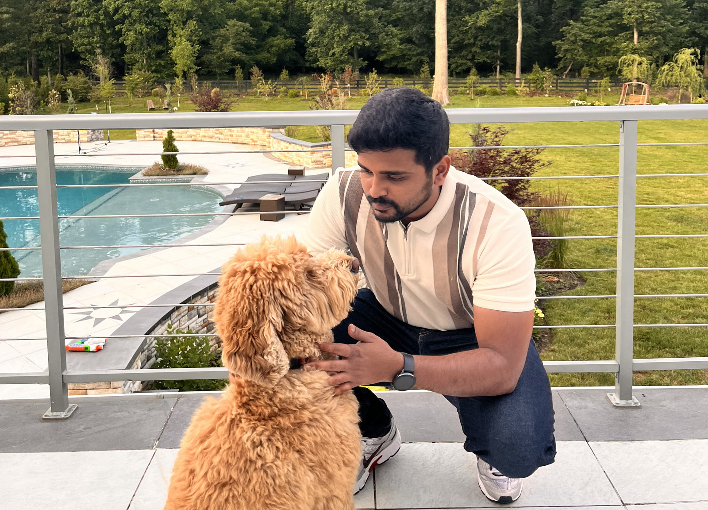

I build & benchmark language models.
I'm Ankit Dongare. This is my public lab notebook — LLM experiments, vLLM benchmarks, AI agents, and the automations behind them. Measured, not vibes.
About
Who's behind the benchmarksI'm an AI engineer focused on the practical side of large language models: how they're served, how fast they run, what they cost, and how configuration choices change all three. Day to day, that means building and evaluating LLM inference systems — benchmarking models, tuning serving stacks like vLLM, and turning results into decisions.
My path started in data. I began as a data analyst turning messy tables into answers, and kept following the harder questions until they led to building AI systems full-time. That origin still shapes how I work: I trust measurements over vibes, and I'd rather show you a benchmark than an opinion.
I'm automation-first by habit. If I do something twice, I script it — from data pipelines to a fully automated video-publishing workflow. I'm not perfect, but I show up every single day and learn harder than the day before.
AI agents, automation-first workflows, and intelligent web apps — plus LLM inference benchmarks.
LLM architecture, GPU optimization on NVIDIA & Intel hardware, and the Hugging Face ecosystem.
Collaborating on AI-powered products, LLM applications, and agent-based systems.

public repositories — AI agents, automations & web apps
Projects
Selected work · more on GitHubAurapal.org
My own product — a career platform I design, build, and run end to end. Aurapal is where my engineering, automation, and product thinking come together in something real people use. It's the builder side of the benchmarks you'll read about here.
LLM Inference Benchmarks
Ongoing series measuring how serving configs change throughput, latency, and cost — batch size, quantization, context length, and scheduler settings across vLLM deployments.
EWG — Elite White Glove
A clean, conversion-focused website built for a white-glove service business, shipped end to end from design to deployment.
hnhHandyman
A TypeScript web application for a handyman service — booking-oriented UI with a maintainable, typed codebase.
Automated YouTube Pipeline
An end-to-end content pipeline that generates, renders, and publishes videos with almost no manual steps — Python agents, FFmpeg rendering, Whisper captions, loudness normalization, and scheduled uploads via the YouTube Data API.
Benchmark Harness
The reproducible harness behind my LLM benchmarking posts — configs, run scripts, and raw results, published alongside each write-up.
Contact
Usually reply within a day or twoWorking on LLM evaluation, inference, or agents and want a second pair of hands on a benchmark or write-up.
Questions about a post, a config I tested, or how to set up a benchmark of your own \u2014 happy to talk shop.
Ideas for AI-powered products, automation workflows, or anything touching Aurapal. Pitches welcome.